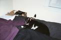
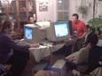
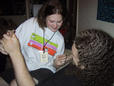
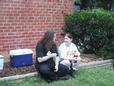
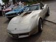
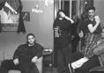

Warning: do not link directly to images on this site.
| nchanter, halloween '03, taken by tashari | |
| Darxus by the Boston Tea Party Ship, photo by pinkee, 12/8/02 | |
| Darxus at his apartment building, photo by pinkee, 12/8/02 | |
|  | Monster, photo by pinkee, 12/8/02 |
|  | LAN parties are cool. Darxus on the left. Photo by Time, 10/27/09. At that moment we had 10 people playing Battlefield 1942. Hey, this is the first pic since I lost 50 pounds. |
 |
Darxus' piercings - left ear (read about them) |
| Left to right: Darxus, Pinkee, Paradox, and the chick Paradox brought, at the 2001 Netaxs christmas party. This is about when I hit my peak of 230 pounds. | |
| Darxus with Houdini on his head. Note the white tips of her back paws on either side of his head. | |
| Darxus and Pinkee at the East Coast Linux 10th Anniversary Picnic (8/25/01). Photo by Michael Simons. | |
|  | Darxus and Pinkee at RABCon at Angie's, taken by Katester. |
|  | Darxus and Pinkee at RABCon at Judy's, taken by Katester. |
| Darxus and Pinkee at N-tropy's. | |
| Darxus at work. | |
|  | 1978 Chevrolet Corvette. I want one. In black. |
 |
Left to right: Nita, MCT, me -- at the Earthstation Netaxs party on 11/2/2000 |
 |
Andrea |
| A picture of a black 2000 Dodge Neon. I had one. | |
| Helen (3rd ex gf) & Darxus, shortly after they met. I was 23, she was 29. | |
|  | Darxus at Pandamorbium, photograph by Kyle Cassidy <cassidy@netaxs.com> |
| It says "Darxus", was created by me some time before Aug 20 1996 (according to it's timestamp), and was created in POV (Persistance Of Vision). I have no idea where the definition of it is. | |
| My extreemly cool keyboard with the extra bits (case & keycaps) removed, which I've been using at work since.. fall of 1999 ? - and am typing on this very moment. | |
| A really cool part of the Mandlebrot Set I found with Fractint. With this parameter file and Fractint, you can regnerate it at any resolution. | |
| barb, my 2nd ex gf. | |
| Vicki (1st ex gf) & Darxus a long time ago. |
{kind=link}
{kind=link}
{kind=link}
{kind=link}
{kind=link}
{kind=link}
{kind=link}
{kind=link}
{kind=link}
{kind=link}
{kind=link}
{kind=link}
{kind=link}
{kind=link}
{kind=link}
{kind=link}
{kind=link}
{kind=link}
{kind=link}
{kind=link}
{kind=link}
Comment on this page.
Return to Darxus' home page.
Valid HTML 4.01.
Mon Apr 18 14:46:18 EDT 2005